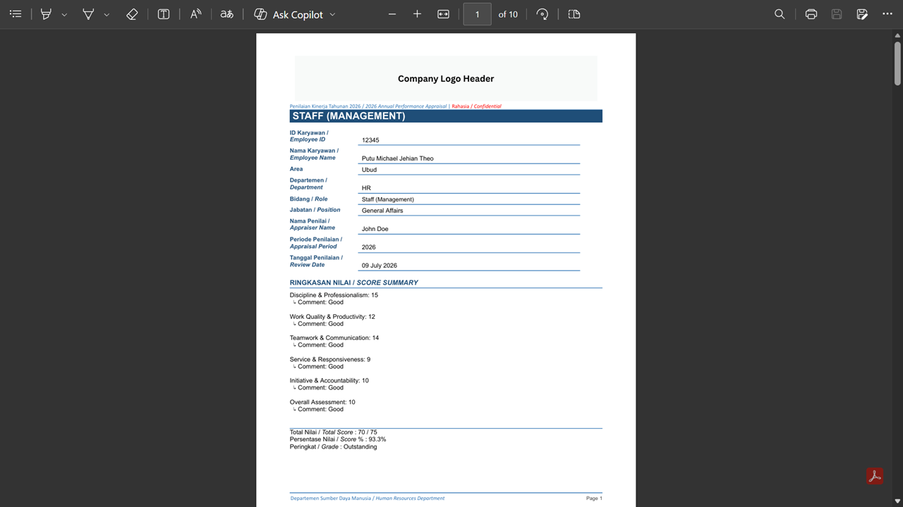
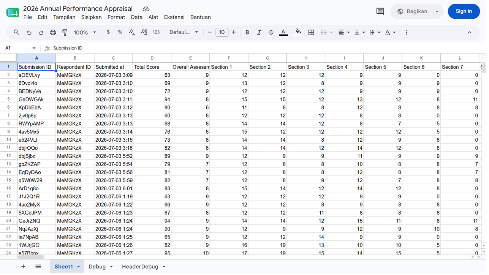
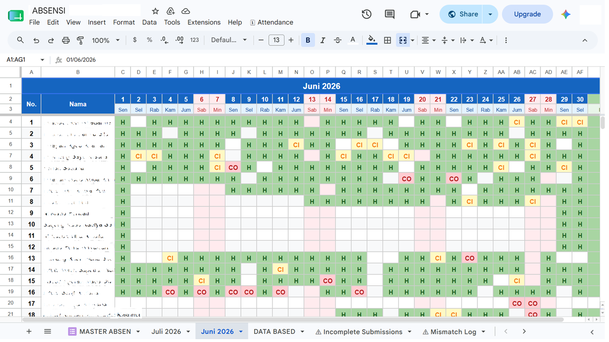
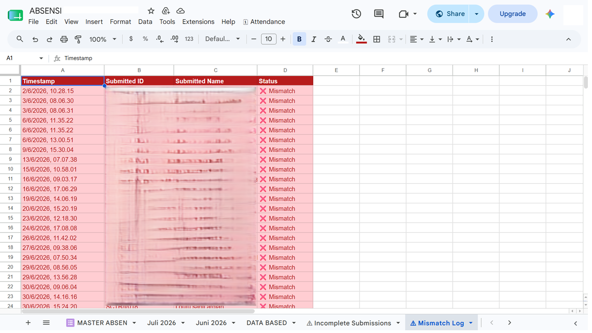

Putu Michael Jehian Theo — General Affairs Daily Worker at BaliSuperHost in Bali, who builds automation tools instead of just requesting them: appraisal pipelines, attendance systems, inventory apps, and rules-based trading engines. This page is a running log of what I've shipped.
pmjtheo@gmail.com · Badung, Bali, Indonesia
I work as a General Affairs Daily Worker at BaliSuperHost in Bali, handling equipment, supplies, and inventory for the team day to day. Somewhere along the way, instead of tolerating slow manual processes, I started building the tools to fix them myself — no engineering title required.
Every project on this page started as a real, specific operational headache: an appraisal cycle that took days to compile by hand, an attendance sheet nobody trusted, an inventory spreadsheet nobody could search. I learned the platforms as I needed them — Google Apps Script first, then React, then applied scripting for rules-based systems — and shipped something my own team actually uses.
Manage equipment, supplies, and inventory documentation for the team, and build the automation systems featured on this page — including the asset database, attendance tracker, and appraisal pipeline. Also coordinated the relocation of a 35-person division to a new office, moving 100+ pieces of equipment and cutting reconciliation time from 2 days to same-day.
Scheduled and tracked project deliverables, maintained documentation, and facilitated stakeholder communication — completed during my first year of university.
Executed high-accuracy data entry and digital file organization, refining data-processing methods alongside the team.
Maintain multimedia and IT equipment — PCs, cameras, audio gear, and network cabling — in consistent operational readiness, and diagnose hardware, connectivity, and cabling issues to support reliable weekly livestreamed services. Ongoing for over five years, primarily during university breaks between semesters.
An end-to-end pipeline that turns Tally form submissions into finished, role-specific PDF appraisal reports — cutting processing time from 2+ hours to 15–30 minutes per appraisal.
_col{N} indexing, and organizes output into area-based Drive sub-folders.

A calendar-style attendance tracker built on Forms and Sheets, used by 30+ staff daily, with color-coded status so anyone can spot a problem in seconds.


Rules-based gold (XAUUSD) trading systems built in parallel across MetaTrader 5 and TradingView, exploring multi-timeframe confluence and risk management logic.
<img src="trading-1.png"><img src="trading-2.png">A React inventory management app built across several iterative releases, turning a spreadsheet tracking 1,500+ assets into a searchable, filterable interface.
<img src="equiptrack-1.png"><img src="equiptrack-2.png"><img src="equiptrack-3.png">A lightweight browser tool for tracing and marking the corners of a rectangular shape in an uploaded photo.
<img src="overlay-1.png">Selected for Kampus Merdeka's MSIB Independent Study program — Bangkit, led by Google in partnership with Dicoding, Machine Learning learning pathway. Completed a capstone project building an image-recognition app for sign language translation.